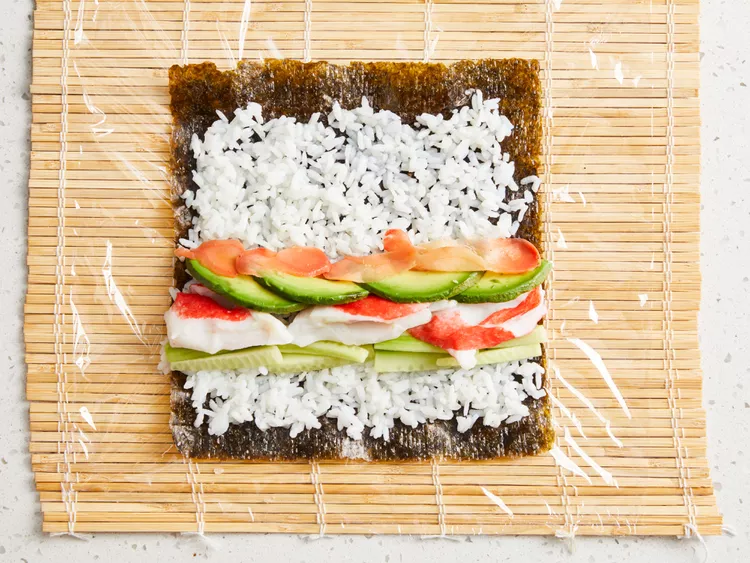

Homemade Sushi

Description
A beloved Japanese dish with a delectable combination of flavors and textures. Whether eaten as a light snack or as part of a meal, this dish is sure to make your taste buds scream in joy!
Ingredients
- 1 1/3 cups water
- 2/3 cup uncooked short-grain white rice
- 3 tbsp rice vinegar
- 3 tbsp white sugar
- 1 1/2 tsp salt
- 4 sheets nori seaweed sheets
- 1/2 lb imitation crabmeat, flaked
- 1 avocado - peeled, pitted, and sliced
- 1/2 cucumber, peeled, cut into small strips
- 2 tbsp pickled ginger
Directions
- Gather all ingredients. Preheat the oven to 300° F (150° C).
- Bring water to a boil in a medium pot; stir in rice. Reduce heat to medium-low, cover, and simmer until rice is tender and water has been absorbed (20-25 minutes).
- Mix rice vinegar, sugar, and salt in a small bowl. Gently stir into cooked rice in the pot and set aside.
- Lay nori sheets on a baking sheet.
- Heat nori in the preheated oven until warm (1-2 minutes).
- Center a nori sheet on a bamboo sushi mat. Use wet hands to spread a thin layer of rice on top. Arrange 1/4 of the crabmeat, avocado, cucumber, and pickled ginger over rice in a line down the center.

- Lift one end of the mat and roll it tightly over filling to make a complete roll. Repeat with the remaining ingredients.
- Use a wet, sharp knife to cut each roll into 4-6 slices.
Credit
Recipe adapted from Allrecipes.